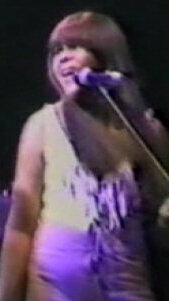

Clydie King
Clydie Mae King was an American singer, best known for her session work as a backing vocalist. King also recorded solo under her name. In the 1970s, she recorded as Brown Sugar, and her single "Loneliness " reached No. 44 on the Billboard R&B charts in 1973.
Complete Discography & Tracklists (3)